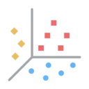
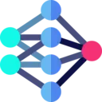

Inferencia jerarquica de proteinas de fagos
Pipeline de IA para anotar secuencias proteicas con una ruta biologica interpretable: origen celular o viral, rama de fago, estado estructural y contexto de cluster.

ProstT5Embeddings
MLPs jerarquicosClasificacionResultado de inferencia
Prediccion demo completaID de consulta: Q7X8...A2F3 - Tiempo estimado: 14.2 s
No hay inferencia ejecutada
Sube un archivo FASTA para ejecutar Vydra. Aqui se mostrara el progreso de ProstT5 y luego los resultados por secuencia.
0 secuencias detectadas0 / 0
Prediccion principal
Phage - Estructural
Clase: Major capsid
Confianza
96%Muy alta
Top clases jerarquicas
- Nivel 1Viral0.999
- Nivel 2Phage0.998
- Nivel 3Estructural0.979
- Nivel 4Capsid proteins0.962
- Nivel 5Major capsid0.955
Informacion del cluster
Cluster asignadoC2034
Tamano del cluster1,248